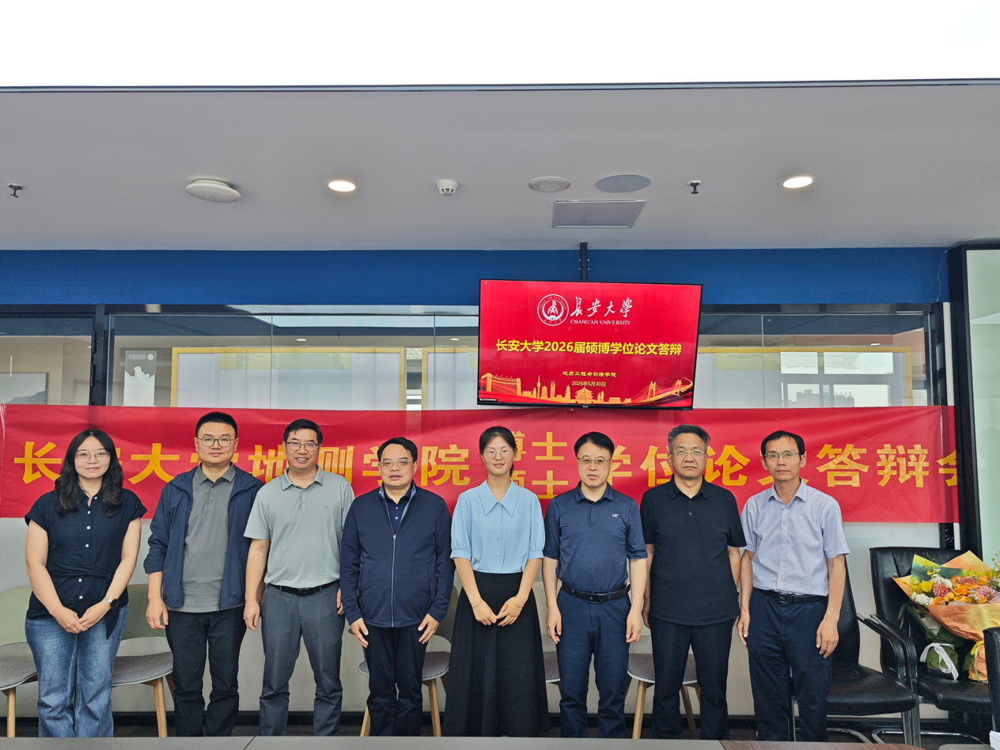

博士研究生
张静
论文题目：《基于土壤水热分层作物模型的冬小麦遥感估产研究》
主要研究内容：针对根区分层土壤水分对冬小麦估产贡献不明确、WOFOST模型土壤水分过程刻画不足及同化估产不确定性分析不充分等问题，构建根区分层土壤水分贡献评估框架，建立土壤水热分层作物模型E-WOFOST，并引入PROSAIL模型系统评估多源信息和同化策略对产量预测结果的影响。
-
科研成果：
- Wheat yield prediction using an enhanced WOFOST with soil stratified hydrothermal module driven by GLASS and ERA5-land products over Yellow River Basin. Computers and Electronics in Agriculture, 2025, 237, 110669.
- Estimation of winter wheat yield by assimilating MODIS LAI and VIC optimized soil moisture into the WOFOST model. European Journal of Agronomy, 2025, 164: 127497.
- Comparison between different data assimilation schemes by integrating the E-WOFOST and PROSAIL models on winter wheat yield prediction. Journal of Integrative Agriculture, 2026. （已接收）
